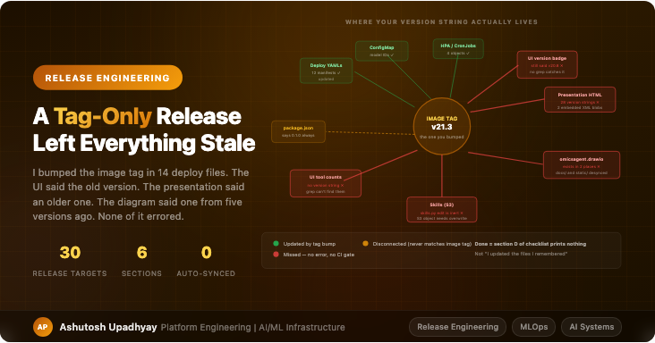

Release EngineeringA tag-only image bump left the UI, presentation, and diagrams five versions stale. None of it errored. Here's what a real AI system release checklist looks like — and why software release habits create the gap.
I bumped the image tag across 14 deploy files, ran the Jenkins job, watched 8 deployments and 4 CronJobs roll over cleanly. Green. Done.
Three weeks later someone asked why the UI still said the old version. I looked. It did. I checked the presentation slides used for demos. They said an even older version. The architecture diagram served by the UI said a version from five releases ago. None of it had errored. No CI gate had caught it. The Kubernetes rollout was perfect; the system just wasn't self-consistent.
This is the release failure mode specific to AI systems: the container is correct but the system isn't. Regular software release discipline gets you to a correct container. It doesn't get you to a consistent system.
In a typical web service, the version string is in one or two places: a package.json or pyproject.toml, surfaced by a /health or /version endpoint. The container image tag matches what's in code because the build system enforces it. A wrong version is either immediately visible or caught by a smoke test.
AI systems break this pattern in at least four ways:
Documentation is functional, not decorative. In a web service, the README being one version behind is a minor annoyance. In an AI system, the presentation deck might be what a department head sees to decide whether to expand your rollout. The architecture diagram might be what a security reviewer uses to assess data flow. These documents are live artifacts, not optional extras.
Configuration is split across multiple systems. Model IDs live in ConfigMaps, not code. Changing the inference model means updating the ConfigMap — but the UI's "About" page that displays model names reads from a hardcoded string, not the ConfigMap. They decouple silently.
Diagrams exist in two copies. The architecture diagram lives in docs/ for editing, and in static/ for serving. The UI serves the static/ copy. They are two separate files. Updating the docs/ copy and forgetting the static/ copy is not caught by any tool that looks at the container image.
Skills are served from object storage. The domain-expertise layer of the agent — the rules it uses to reason about your specific domain — lives in S3, not in the container. Editing the Python source file and rebuilding the container does nothing. The runtime reads from S3. This is the most dangerous one: it means the container can be "correct" while the agent is operating on stale domain rules.
After the incident above, I wrote out everything that could hold a version-dependent fact. It fell into three categories, and the first one is the only one most people think about:
Image tags in Kubernetes manifests. This is what a tag bump updates. It's important, but it's also the smallest part of the problem. On my system it covers 12 manifests: 8 deployments, 4 CronJobs.
find . -name "container.yaml" | xargs grep -l "experagent" | wc -l
# 12 — not 8, not 14. Discover, don't count from memory.Even here, count by discovery. I had "14 files" in my head from the last release. The actual number was 12. The runner image has a separate lifecycle and should not be swept into a global find-replace. Grepping for the pattern is the only reliable count.
These are the strings that users, reviewers, and stakeholders see. They have no relationship to the container image tag. They don't update automatically. They're scattered across:
On my system, the presentation HTML alone contains 28 places where a version string or version-dependent fact appears. None of them are caught by a grep for the image tag, because the image tag and the presentation version string are different things edited by different people at different times.
Some facts change with a release but carry no version label. They can't be found by grepping for a version string because they're not version strings — they're counts, model names, feature descriptions.
| What changes | Where it lives | How to verify |
|---|---|---|
| Tool count ("34 tools") | UI About page, presentation slides | Count ALL_TOOLS in code, compare |
| Model names ("Opus 5") | UI About page, presentation, notes | Read ConfigMap, not code defaults |
| Source count ("19 sources") | Multiple UI pages | Count VALID_SOURCES in code, compare |
| Skills content | S3 objects, not Python files | Overwrite S3 directly after code edit |
| Diagram component labels | Two copies of .drawio file | md5 compare after both copies updated |
The tool count case is particularly easy to miss. The UI's "About" page says "34 tools." You add a new tool. You rebuild the container. The agent now has 35 tools. The UI still says 34. The discrepancy is invisible until someone demos the new tool and a stakeholder notices the mismatch.
The architecture diagram is the clearest example of how an AI system's release surface differs from a regular application. The diagram isn't just documentation — in my system it's served by the UI as an interactive visualization. That means it exists in two separate places:
docs/experagent.drawio — the editable source, lives in the backend repoexperagent-ui/static/drawio/experagent.drawio — the copy the UI actually servesThey are not linked. They are not synced by any tool. If you edit the docs/ copy and re-export the SVG, the UI still serves the old copy from static/. The only verification is a checksum comparison after you've manually copied both files:
md5 -q docs/experagent.drawio
md5 -q experagent-ui/static/drawio/experagent.drawio
# These must match. If they don't, one copy was missed.I discovered these were desynced five months into running the system. The docs/ copy had been updated three times. The static/ copy had been updated once. The UI had been serving an outdated diagram to every user for months, with no error and no indication anything was wrong.
The root cause of repeated recurrence: there is no single source of truth for the version string in an AI system. package.json might say 0.1.0. __init__.py might say 0.1.0. pyproject.toml might say 2.1.0. None of these are related to the image tag, which is the version users and operations actually care about. The version is hand-copied into approximately 30 places with no enforcement. Until you add a CI gate that verifies the version string is consistent across all 30 places, the inconsistency is a matter of when, not if.
Skills are the most counterintuitive part of the release. The Python file that defines them — skills.py — is in the repository. It's versioned. It's reviewed. It's in the container image. Editing it and rebuilding the container feels like a complete release.
It isn't. The agent reads skills at query time from S3, not from the container. The S3 object is the authoritative copy. The Python file is effectively a local draft.
# This is what the agent actually calls at query time
async def get_skills(domain: str) -> dict:
s3_key = f"skills/{domain}.json"
response = s3_client.get_object(Bucket=SKILLS_BUCKET, Key=s3_key)
return json.loads(response["Body"].read())
# reads from S3 — not from skills.pyThe release step that most engineers omit: after editing skills.py, the S3 object must be overwritten manually. A container rebuild that includes the new skills.py has zero effect on agent behavior until the S3 overwrite happens. If you run two container versions side by side during a rollout, they'll both read from the same S3 object — the current one, not the version-matched one.
This pattern applies to any AI system where configuration, prompts, or rules are loaded at runtime from external storage rather than from the container. The container image is not the complete release artifact. It's one component of it.
The checklist I now use for every release has 30 items across 6 sections. The test for "done" is not "I updated the files I remembered." It's: running a discovery grep prints nothing.
# Section D: verify no stale version strings remain
grep -rn "v21\.2\|v21\.1\|v20\." \
--include="*.html" --include="*.svelte" --include="*.md" \
experagent-ui/src/ docs/
# Must print nothing before the release is complete.The six sections are: deploy manifests, ConfigMap and runtime config, UI version surfaces, documentation and presentations, diagram copies, and runtime-served artifacts (skills S3). The last two are the ones that standard release processes don't cover at all.
For every section, the rule is: discover by grep, not by recall. The number of files in each section has changed with every release. Remembered counts are wrong. The grep count is correct.
The fix worth making permanent: a CI job that reads the version from the ConfigMap and verifies it appears consistently across all known surfaces. It doesn't prevent the surface list from drifting, but it prevents a known surface from being left behind. Pairing it with a "surface inventory" file that CI verifies is complete turns a checklist into a gate. Until then, the checklist is the best available control.
The specific mechanisms here are particular to AI systems — skills in S3, diagrams in two places, ConfigMaps holding model IDs — but the underlying pattern generalises: in any system where the release artifact is not a single deployable unit, release discipline must extend to every component that can hold version-dependent state.
Regular software release discipline is built around the assumption that a container (or a build artifact, or a binary) is the complete thing. AI systems violate that assumption in at least four ways: runtime configuration, runtime-served content, documentation that is operationally load-bearing, and human-facing displays that are decoupled from the thing being deployed.
The checklist is the stopgap. The permanent fix is discovering and eliminating every place where a version-dependent fact lives outside the deployment artifact, or at minimum making each such fact automatically verified at release time. Until then: discover, don't remember; grep counts are correct, mental counts are wrong; and "done" means the verification command prints nothing.
docs/ copy and the static/ copy are independent files. Verify with a checksum after updating both.skills.py alone is inert. The agent reads from S3. The S3 object is the authoritative copy. The container rebuild changes nothing until the S3 overwrite happens.